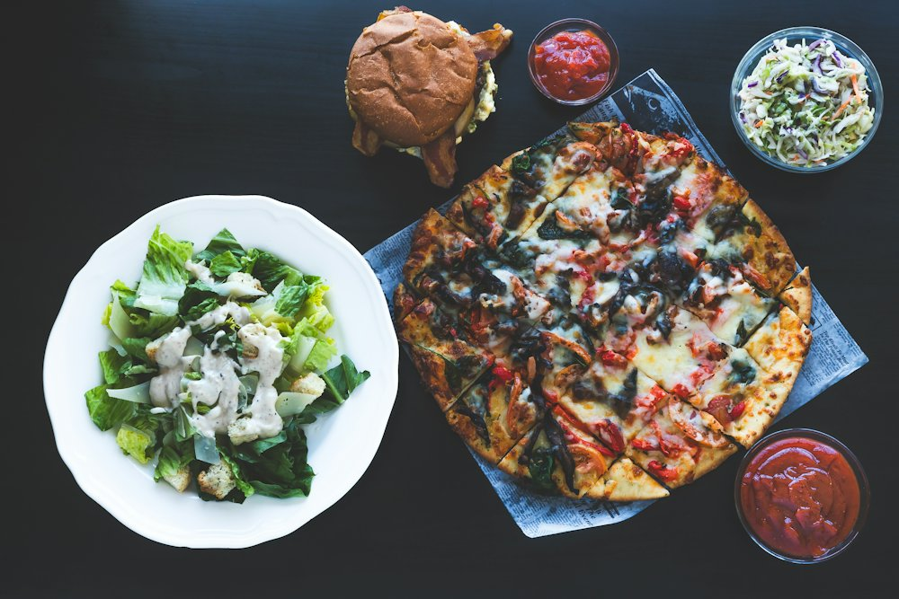

La carte
Un plat du jour midi et soir, un burger du moment qui change régulièrement, des pizzas et des plats maison. Suivez la page Facebook pour l'ardoise de la semaine.

À emporter aussi
Pizzas, burgers et plats se commandent par téléphone et se récupèrent au restaurant.
Commander au 02 56 10 11 33Horaires
| Lundi | Fermé |
|---|---|
| Mardi | 12h - 13h45 18h30 - 21h30 |
| Mercredi | 12h - 13h45 18h30 - 21h30 |
| Jeudi | 12h - 13h45 18h30 - 21h30 |
| Vendredi | 12h - 13h45 18h30 - 22h |
| Samedi | 12h - 13h45 18h30 - 22h |
| Dimanche | 10h - 13h45 18h30 - 22h |
Nous trouver
4 place de l'Église29170 Saint-Évarzec